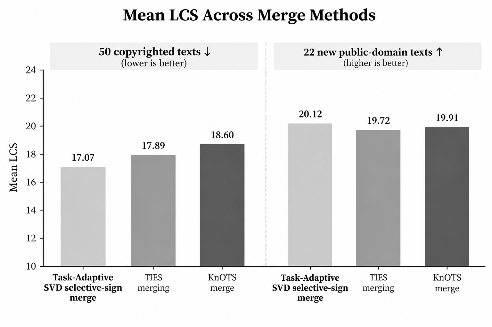

Conflict-resolved LoRA merging
Copyright-aware LLM updates

- Benchmark LLM memorization and copyright compliance with Hugging Face models, evaluating verbatim reproduction using LCS, ROUGE-L, and refusal rates.
- Designed Selective Sign Merging for LoRA adapters, resolving conflicting weight updates by adaptively preserving dominant contributions.
- Extended the method with SVD masked gating, using task-specific activations and local errors to calibrate singular-component corrections.
- Outperformed baseline model merges, on all evaluation metrics, improving unlearning by up to 13% and relearning by up to 4%